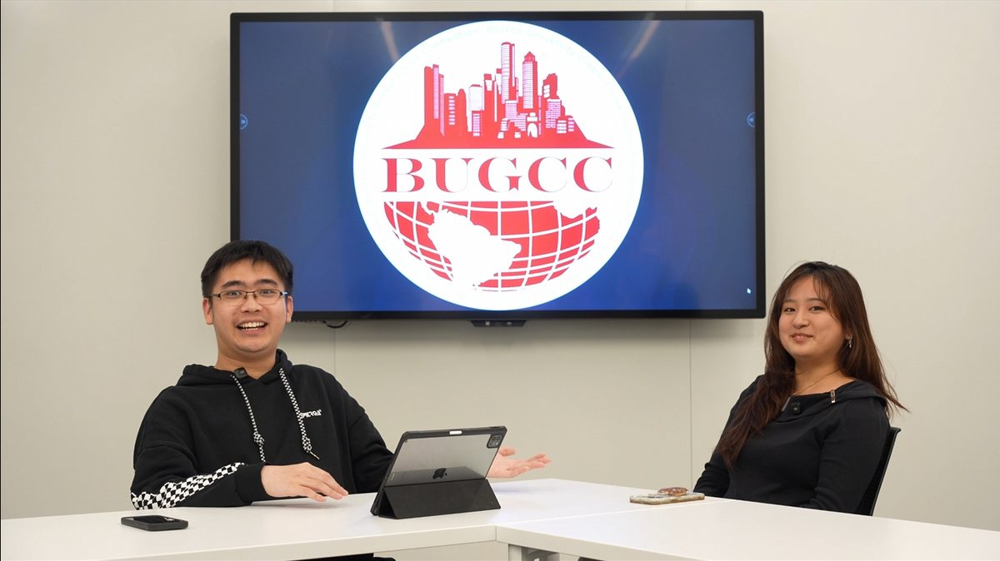
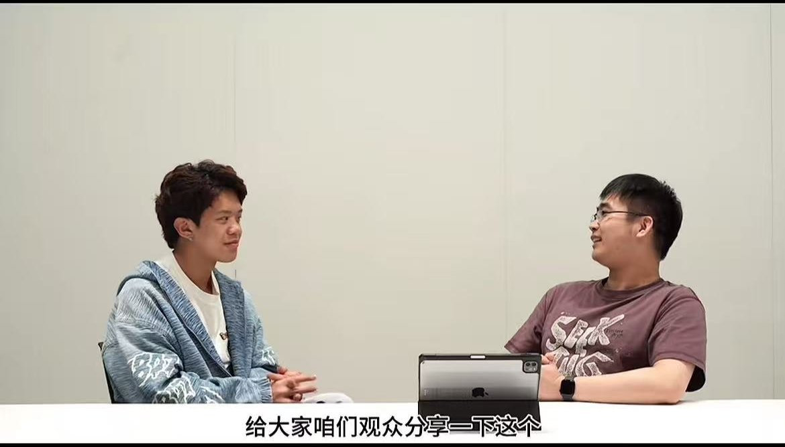

ABOUT · 关于这个栏目
很多事，来 BU 之前没人告诉你。
《BU留子日记》是 BUGCC 出品的留学生访谈短片系列，每一期请一位走过这条路的学长学姐，坐下来真实地聊：怎么选社团、怎么演讲、怎么找实习。
每一期分成三集，在抖音上更新。点开下方对应集数，就能跳转抖音观看。
EPISODES · 已发布期数
每期一张封面，分集观看


下一期酝酿中。在 抖音关注 BUGCC，更新第一时间送达。
把过来人的话，做成短片放给你看。
ABOUT · 关于这个栏目
很多事，来 BU 之前没人告诉你。
《BU留子日记》是 BUGCC 出品的留学生访谈短片系列，每一期请一位走过这条路的学长学姐，坐下来真实地聊：怎么选社团、怎么演讲、怎么找实习。
每一期分成三集，在抖音上更新。点开下方对应集数，就能跳转抖音观看。
EPISODES · 已发布期数


下一期酝酿中。在 抖音关注 BUGCC，更新第一时间送达。

用微信「扫一扫」即可关注